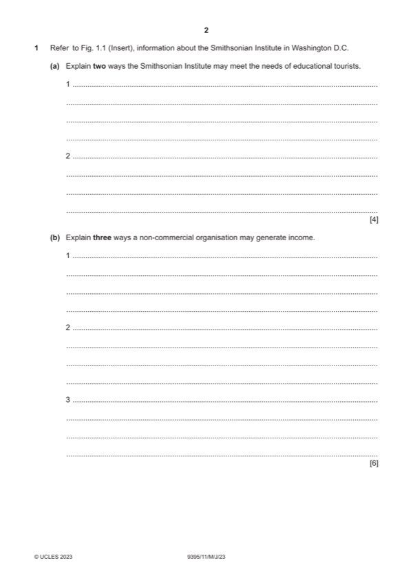

Question 1

Original paper page 2
Part 1(a) — solution
- Leaflets (1) may be provided to describe the exhibits which may be of
- Variety of exhibits (1) which will have significance to history of the
- Range of galleries (1) containing a wide variety of artefacts which will
- Facilities for educational groups (1) so that numbers can be easily
- Webinars (1) so that teaching can be done remotely (1)
- Courses and research facilities may be booked (1) so that the exhibits
Mark points
- Leaflets (1) may be provided to describe the exhibits which may be of
- Variety of exhibits (1) which will have significance to history of the
- Range of galleries (1) containing a wide variety of artefacts which will
- Facilities for educational groups (1) so that numbers can be easily
- Webinars (1) so that teaching can be done remotely (1)
- Courses and research facilities may be booked (1) so that the exhibits
Part 1(b) — solution
- Donations (1) may be made through wills and boxes about the
- Sales of tickets (1) will raise money to support the work of the
- Shops/cafes will sell goods (1) which will help raise additional funds (1)
- Grants (1) may be given by Governments to help in various projects (1)
- Legacies (1) will be left in wills by people who were members (1)
- Fundraisers (1) will allow people to raise money which can support a
Mark points
- Donations (1) may be made through wills and boxes about the
- Sales of tickets (1) will raise money to support the work of the
- Shops/cafes will sell goods (1) which will help raise additional funds (1)
- Grants (1) may be given by Governments to help in various projects (1)
- Legacies (1) will be left in wills by people who were members (1)
- Fundraisers (1) will allow people to raise money which can support a
Part 1(c) — solution
Assess how a museum may use new technology. 6
Indicative content:
Smart phones and apps which will allow the use of the phone for booking
and paying, guides or for uploading and taking photographs.
Social media sites are easily accessed via the phone which will be wi-fi
enabled.
Can also include the use of tablets whilst visiting organisations such as
museums and art galleries.
E-ticketing use by museum which will help queues and reduce costs, also
making visit entry faster for visitors.
Advertising on social media sites or targeted at specific customers.
Security technology such as x ray machines for checking bags.
Other relevant information should also be credited.
Mark according to the levels of response criteria below.
Level 3 (5–6 marks)
Candidates will show a clear understanding of the question and effectively
assess how a museum may make use of new technology. Candidates
effectively assess a range of ways and attempt to weigh up the significance
of each. There is sound and frequent evidence of thorough, detailed and
accurate knowledge and understanding of concepts and principles using
appropriate terminology.
Level 2 (3–4 marks)
Candidates will show an understanding of the question and include
explanations of how new technology may be used by a museum. There may
be some attempt to assess and some analytical language may be used. The
answer is relevant and accurate and shows reasonable knowledge and
understanding of concepts and principles with some use of appropriate
terminology.
Level 1 (1–2 marks)
Candidates identify/describe some possible ways new technology can be
used by a museum. Information may be a list of points and explanations
may be incomplete and arguments partial (if present). The answer lacks
coherent organisation and there is little or no attempt to assess. The answer
is basic and shows limited knowledge and understanding of concepts and
principles with limited use of appropriate terminology.
Level 0 (0 marks)
No content worthy of reward.
2023 Page 6 of 16
9395/11 Cambridge International AS & A Level – Mark Scheme May/June 2023
Mark points
- Include the ideas shown in the solution above.
Part 1(d) — solution
Discuss the importance of museums in the conservation of cultural 9
heritage.
Indicative content:
Using education programmes to inform about items or aspects of culture so
people will realise their importance and keep them conserved.
Preservation and conservation of artefacts as people with the necessary
skills or knowledge will be available through the museum.
Actively promoting aspects of culture in the form of exhibitions and displays
in the museum will show how important this is and so people will be more
accepting of this.
Sending items out on tour throughout regions and other countries highlights
the cultural artefact and so they will have more reason to conserve and look
after them.
Taking part in research activities and conserving items uncovered by
members of staff from the museum will provide more background
information about them.
Other relevant information should also be credited.
Mark according to the levels of response criteria below.
Level 3 (7–9 marks)
Candidates will show a clear understanding of the question and include
detailed identification and discussion of the importance of museums in the
conservation of cultural heritage. Candidates effectively discuss and attempt
to evaluate a range of ways and clearly attempt to weigh up the significance
of each. Analytical language will be used. There is sound and frequent
evidence of thorough, detailed and accurate knowledge and understanding
of concepts and principles using appropriate terminology.
Level 2 (4–6 marks)
Candidates will show an understanding of the question and include some
explanation of importance of museums in the conservation of cultural
heritage. There may be some attempt to discuss and some analytical
language may be used. The answer is relevant and accurate and shows
reasonable knowledge and understanding of concepts and principles with
some use of appropriate terminology.
Level 1 (1–3 marks)
Candidates identify/describe some of the ways in which museums may
assist in the conservation of culture. Information may be a list of points,
explanations are incomplete and arguments partial (if present). The
response will lack coherent organisation and there is no attempt to discuss.
The answer is basic and shows limited knowledge and understanding of
concepts and principles with limited use of appropriate terminology.
Level 0 (0 marks)
No content worthy of reward.
2023 Page 7 of 16
9395/11 Cambridge International AS & A Level – Mark Scheme May/June 2023
Mark points
- Include the ideas shown in the solution above.